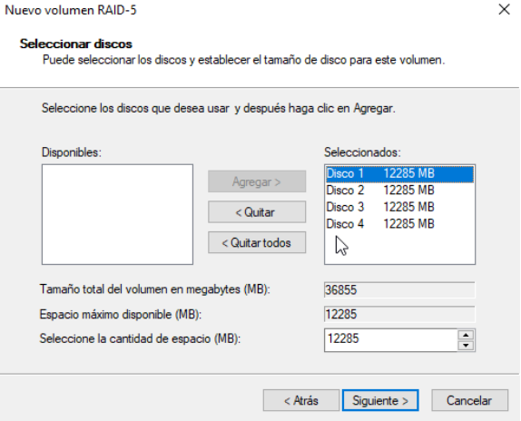
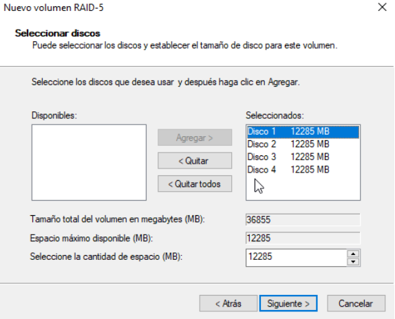

→ [ Beyond ] ←
RAID 5
Creando un RAID 5 con los discos en Windows Server 2019
Crear volumen RAID-5.
Seleccionar los discos.
Dar formato al RAID.
Comprobar estado del RAID.
Creando un RAID 5 con los discos en Windows Server 2019
Crear volumen RAID-5.
Seleccionar los discos.
Dar formato al RAID.
Comprobar estado del RAID.